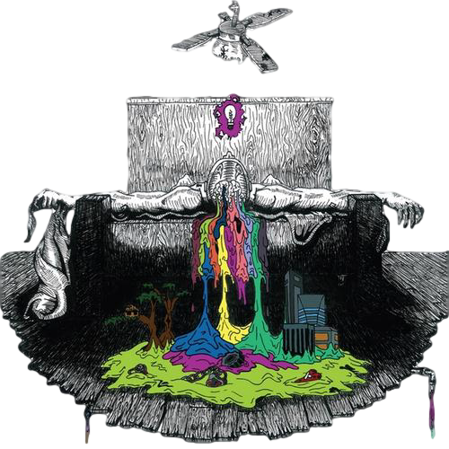
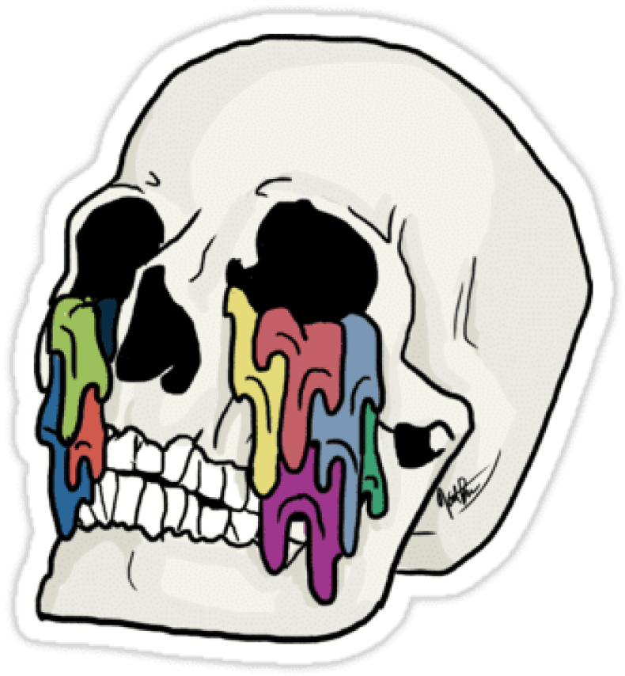
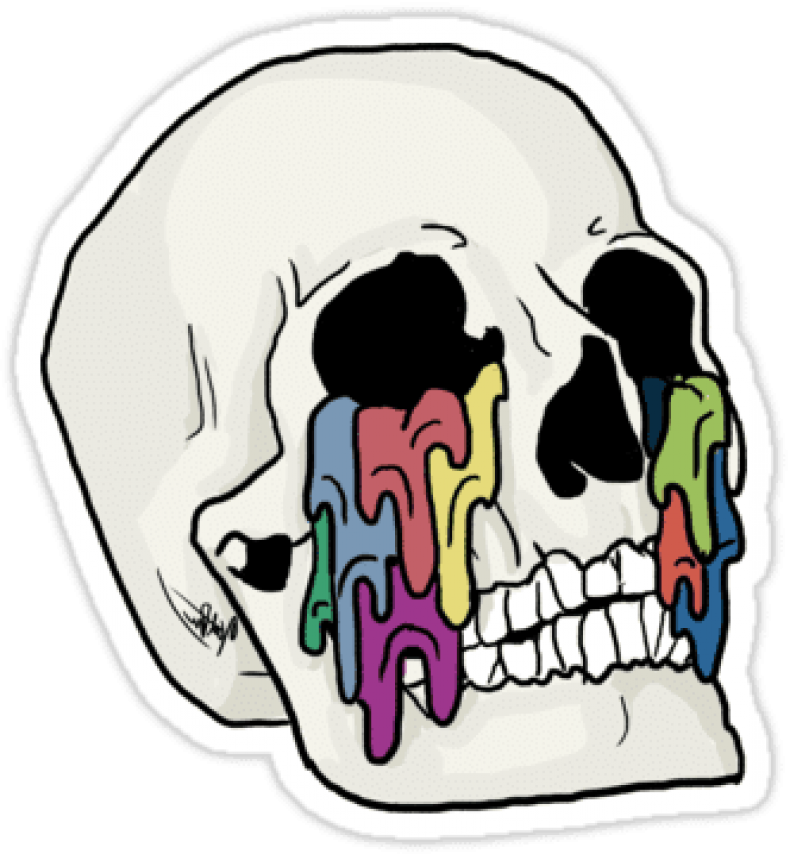

Self Titled

SelfTitled foi o primeiro albúm da banda, lançado ainda em 2009 quando o grupo era formado
por três integrantes e sem a presença de Josh.
O album contém 14 faixas, e cada música é
extremamente carregada de emoções, e com a maioria tendo um instrumental com base em notas
de um piano, e como carro chefe as letras e emoção que Tyler colocava em sua voz ao cantar
cada uma de suas letras.